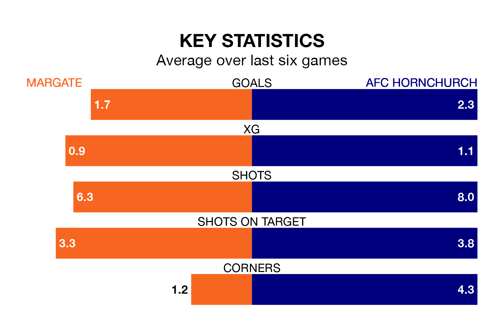

Margate host AFC Hornchurch in Saturday's match at Hartsdown Park looking to bounce back from defeat last time out in the Isthmian Premier Division.
Margate, who sit 19th in the league after 38 games, fell to a 2-3 away defeat to Potters Bar Town on Thursday.
They face a Hornchurch side who picked up a win in their last match, a 2-1 victory against Chatham Town, and who sit first in the table.
With 88 goals in 36 games so far this season, Hornchurch are the league's highest scorers with 2.4 goals per game. And they are conceding fewer than average, letting in 28 goals at a rate of 0.8 per game.
Margate, meanwhile, are below average scorers, with 1.2 goals per game, compared to a league average of 1.6. They have conceded 1.9 goals per game.
In the last 10 years, Margate and Hornchurch have played each other on 12 occasions. They won four each, and they drew four times.
On average, Margate scored 1.7 goals and Hornchurch 1.8 in those matches.
Their last meeting was on August 15, when Hornchurch won 4-1 at home.
The home team are in mixed form in the Isthmian Premier Division, with two wins and two draws from their last six games.
With five wins and one loss over that period, the visitors' form is much better – they have taken 15 points from 18, compared to Margate's eight.
Updated: 10:01 (UTC), 12/04/24